A Escola Demo trabalha com um único sistema de inteligência artificial. O mesmo que o professor usa para preparar a aula, que o seu filho usa para estudar, e que traz a nota e a presença até você.
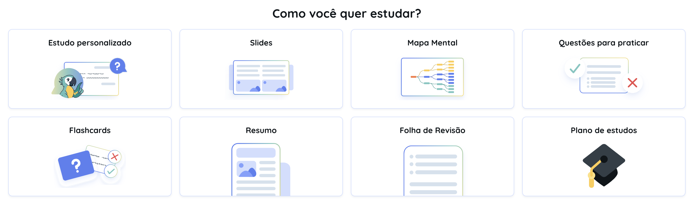
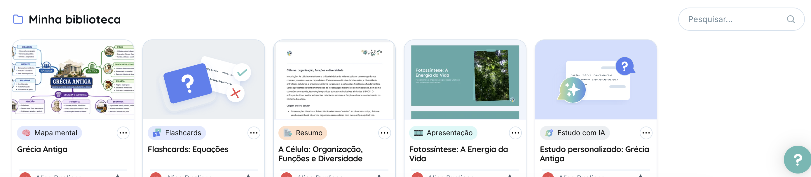
O professor prepara a aula, o seu filho estuda, a prova é corrigida e o resultado chega até você. É tudo no mesmo sistema — nada digitado duas vezes, nada perdido entre uma ferramenta e outra.
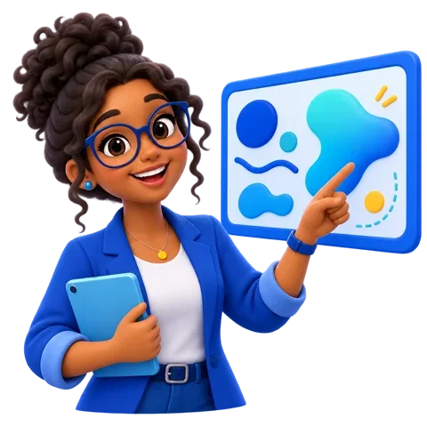
Recebe prática no nível certo para seguir firme.
A escola vê onde travou e manda apoio.
Ganha desafio extra e aprofundamento.
Cada aluno aprende de um jeito. O que foi dado em sala se transforma nos formatos que fazem sentido para cada aula e para cada aluno — e o seu filho escolhe por onde começar.
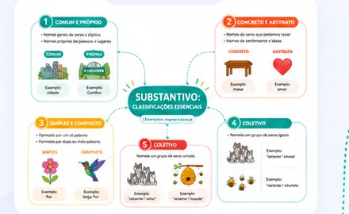
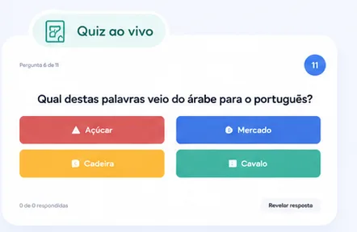
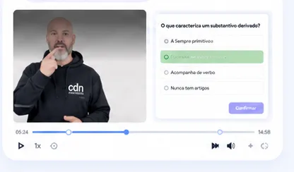
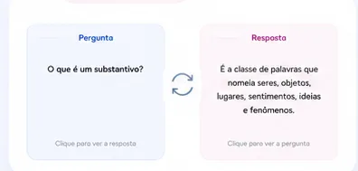
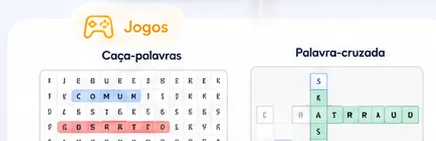
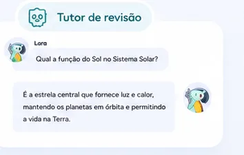
Não só a nota final, mas o que o aluno já aprendeu ao longo do caminho.
As dificuldades aparecem por habilidade e conteúdo, não como um número solto.
Atividades, revisões e intervenções ficam visíveis em tempo real.
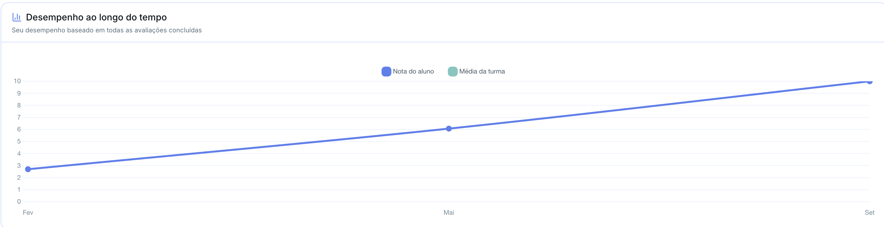
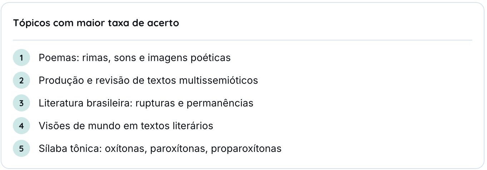
A plataforma tem nível, pontos e sequência de dias praticados. O seu filho sobe de nível, mantém a sequência e vê onde está em relação à turma — sem ninguém precisar ficar cobrando.
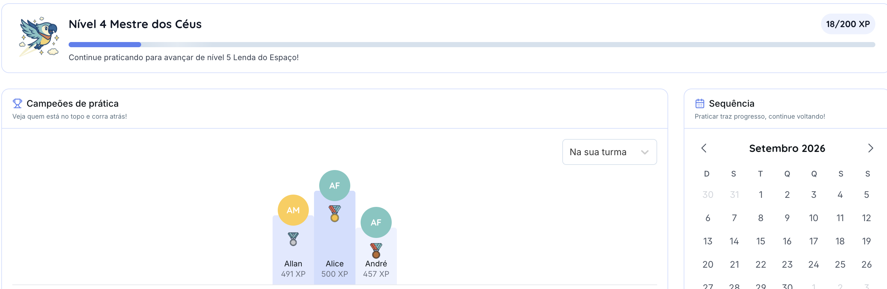
O perfil de cada estudante fica salvo na plataforma, respeitando as especificidades do laudo. A partir daí toda prova e toda atividade já saem adaptadas, sem depender de alguém refazer o material caso a caso.
A dúvida de toda família quando ouve que a escola usa IA é se o filho vai aprender ou vai colar. Aqui o tutor devolve a pergunta, a prova online tem trava, e você vê o que ele fez na plataforma.
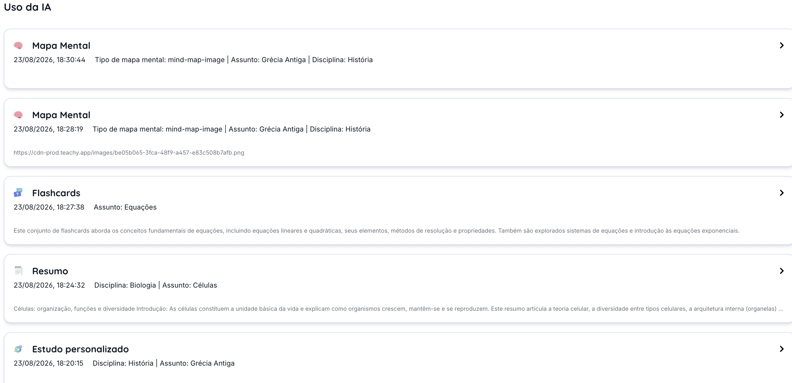
Cada uso fica registrado: quando foi, qual ferramenta e sobre o que. Você abre e vê.
Tecnologia personalizada para a Escola Demo, para uma educação humana, cidadã e voltada para o futuro.
Fale com a nossa equipe de matrículas. A gente tira suas dúvidas e agenda uma visita para você ver tudo isso funcionando.